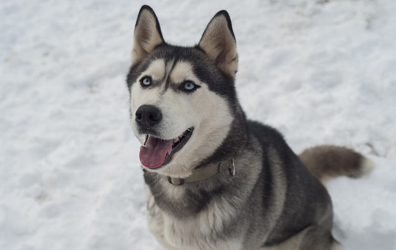

Bucky
Breed: German Shepherd
Gender: Male
Age: 3
Hobbies: Searching for hidden toys, playing with the hose, and being with loved ones.
Backstory: Bucky unfortunately lost his leg due to rare birth defect. We rescued him before the breeder decided to euthanize him despite being an otherwise very helpful and cheery dog.

Daisy
Breed: Border Collie
Gender: Female
Age: 4
Hobbies: Anything to do with tennis balls, especially fetch.
Backstory: Daisy's owners died in a car accident in July of 2020 and entered our care soon after.

Jenna
Breed: Yellow Labrador Retriever
Gender: Female
Age: 7 months
Hobbies: Tug of war and playing with other dogs.
Backstory: Jenna's mom was in our custody at the time she was born but her mom has since been adopted. Jenna is a very curious and energetic dog.

Blue
Breed: Siberian Husky
Gender: Male
Age: Unknown. Guessed to be 5.
Hobbies: Playing in the snow and watching over his family.
Backstory: We found Blue in the middle of a snow storm in the middle of the winter wandering the streets alone. He had no tags or any way to identify where his home was so we took him in. Blue is named after the color of his eyes because that is all we could see through the snowstorm.